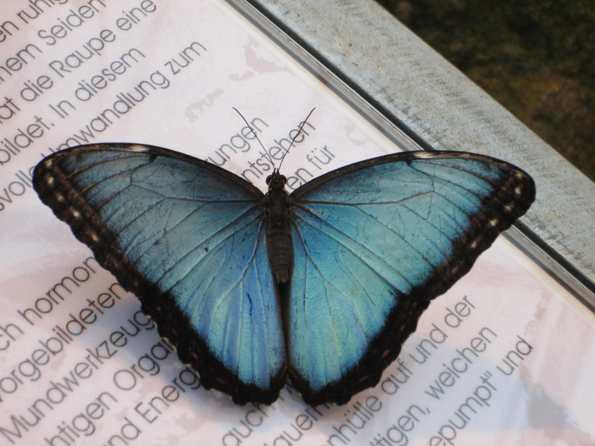

Morfo azul
Morpho peleides · K2

Recorre el ala delantera ancha y la trasera redondeada. Ambas se levantan desde el cuerpo estrecho.
Personalizar
- Ángulo del ala con la horizontal
- 16°
- Altura de las puntas
- 23 mm
Guía de montaje
Qué necesitas Papel de 120 g/m², tijeras, regla y dos clips de 33 mm
-
Paso 1 / 8
Recorta
Recorta la línea exterior, con las tiras del borde y las puntas de las antenas. Corta las cuatro ranuras cortas de las alas traseras.
Es una sola pieza. Cada ala trasera tiene una aleta entre dos ranuras.
-
Paso 2 / 8
Marca los dobleces
Apoya una regla en cada línea discontinua y repásala con un bolígrafo sin tinta.
Cada doblez tiene un surco. El papel grueso se dobla limpio.
-
Paso 3 / 8
Dobla la costa
Dobla cada tira del borde debajo de su ala por su línea de trazos. Aplánala bien.
El borde delantero queda recto y doble, como la vena costal de un ala real.
-
Paso 4 / 8
Dobla el cuerpo
Dobla por la mitad en la línea central de trazos, con los colores dentro. Luego dobla cada ala hacia fuera por su línea de trazo y punto.
Las dos capas del cuerpo cuelgan debajo y se tocan.
-
Paso 5 / 8
Pon los clips en la cabeza
Desliza los dos clips sobre las dos capas del cuerpo, uno encima del otro, hasta la punta.
Los clips quedan dentro del recuadro de trazos.
-
Paso 6 / 8
Equilibra
Apoya las alas en dos dedos bajo los puntos con anillo. Si cae la cola, añade un clip. Si cae la cabeza, retrasa un clip o quítalo.
Se queda horizontal sobre tus dedos.
-
Paso 7 / 8
Forma la V
Sube las dos alas en una V suave. Mira desde la cola y compara cada punta con la tira.
Las dos puntas están a la misma altura.
-
Paso 8 / 8
Lanza y ajusta
Empújala suavemente hacia delante, con la punta recta, a paso de caminar. Si cae en picado, sube las dos aletas 1–2 mm. Si sube y se frena, aplánalas.
Gira a la izquierda: sube un poco la aleta derecha. Gira a la derecha: la izquierda.
Prueba este experimento
Empieza con las dos aletas de cola a ras. En la segunda serie sube un poco una sola. ¿En qué lado se concentran las primeras tomas de contacto?
Recorre el ala delantera ancha y la trasera redondeada. Ambas se levantan desde el cuerpo estrecho. Vistas de frente, sus alas forman la V más marcada de las tres plantillas. Las alas inclinadas pueden responder de forma distinta al aire que llega de lado. Comprueba la altura de ambas puntas antes de observar si se inclina.
En la naturaleza

Guanacaste, Costa Rica
Este morfo azul vive en bosques tropicales desde México, por Centroamérica, hasta Sudamérica. Fíjate en el destello azul cuando gira.
Explora el mapa del mundo
Imprime la plantilla (K2)
Imprime al 100 % (Tamaño real) y comprueba con una regla que la escala del papel mide 50 mm.
Ver los otros modelos
-

Monarca
Recortar y plegar
-
Cola de golondrina
Recortar y plegar